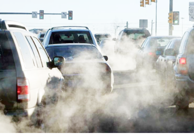
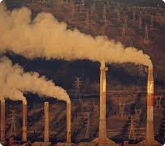

Pemicu Terjadinya Sampah

Penggunaan kendaraan pribadi untuk jarak yang dekat dapat meningkatkan emisi karbon karena pembakaran bahan bakar fosil.
Penggunaan listrik dan air dalam jumlah besar dapat meningkatkan emisi karbon, terutama jika sumber energi listrik berasal dari bahan bakar fosil.
Pilihan makanan kita mempengaruhi emisi karbon, dimana produksi makanan tertentu, seperti daging, menghasilkan lebih banyak emisi dibandingkan dengan tanaman.
Dampak Emisi Karbon

Gas Rumah Kaca (Global Warming)